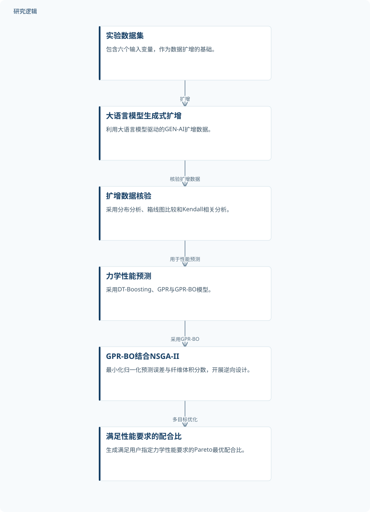

摘要解读
大语言模型生成式人工智能与混合机器学习驱动的黄麻纤维混凝土性能预测及逆向设计
A Large Language Model-based Generative Artificial Intelligence and hybrid machine learning framework for prediction and inverse design of jute fiber concrete
解读更新 2026-10-17 14:37 · 依据公开摘要整理，未核验全文细节
黄麻纤维混凝土如何兼顾低碳潜力与力学性能？这项研究将大语言模型数据扩增、强度预测与配合比逆向设计串联起来，阅读价值在于理解模型如何从“预测材料性能”走向“按性能要求寻找配方”。
文章目录
黄麻纤维混凝土的难点在于非线性配比关系
建筑业需要降低环境影响，同时维持材料的结构性能。摘要将黄麻纤维混凝土（JFC）视为一种有潜力的低碳材料，但纤维特征与配合比参数之间存在复杂的非线性相互作用，使力学性能优化并不容易。研究围绕这一问题，将性能预测与配合比优化纳入同一框架。
从生成式数据扩增到多目标逆向设计
研究以包含六个输入变量的实验数据集为基础，利用大语言模型驱动的生成式人工智能扩增数据，并通过分布分析、箱线图比较和Kendall相关分析进行核验。随后采用决策树提升（DT-Boosting）、高斯过程回归（GPR）及贝叶斯优化增强的GPR（GPR-BO）预测力学性能。
研究还利用SHAP与部分依赖图分析参数影响，并将GPR-BO与NSGA-II结合开展逆向配合比设计。优化涉及六个配合比决策变量，以同时最小化归一化预测误差和纤维体积分数为目标，寻找满足用户力学性能要求的Pareto最优解。
依据摘要整理的数据扩增与逆向设计流程


仅概括摘要明确陈述的方法关系，并非论文原图，不表示摘要未报告的实验配置。
下载 SVG图示关系说明
实线表示相邻阶段的信息流，虚线表示跨阶段联系或反馈。
实验数据集 → 大语言模型生成式扩增：扩增；大语言模型生成式扩增 → 扩增数据核验：核验扩增数据；扩增数据核验 → 力学性能预测：用于性能预测；力学性能预测 → GPR-BO结合NSGA-II：采用GPR-BO；GPR-BO结合NSGA-II → 满足性能要求的配合比：多目标优化
GPR预测占优，纤维参数影响突出
摘要报告，GPR类模型优于DT-Boosting，预测误差降低约40–50%。其中，GPR-BO表现最为稳定，抗压强度和抗拉强度的测试集R²分别为0.9242和0.9682。摘要还报告，概率验证能够准确复现强度分布。
解释性分析识别出黄麻纤维体积分数与纤维含量是影响最大的参数，而水灰比呈现较强的负向影响。逆向设计部分则报告，框架能够自动生成满足用户指定力学性能要求的优化配合比，将正向强度预测进一步连接到配方搜索。
预测指标之外，验证边界仍需查阅全文
仅凭本次摘要，无法判断原始实验样本量、扩增规模、训练测试划分，以及生成数据如何参与评估；扩增数据也不能视为新增的独立实验样本。误差降低所对应的具体指标、模型比较设置和统计检验细节同样未在摘要中展开。
摘要未交代逆向设计配方的独立制备验证范围，也不足以判断跨材料来源或配比范围的泛化能力。减少试错与材料浪费是作者强调的应用价值，但摘要未给出相应量化结果，不能据此认定其工程节约效果已经得到充分验证。
阅读启发：区分配方可预测与配方可实现
阅读启发：这项工作的关注点不仅是预测精度，还包括如何把性能要求转化为配方候选。进一步阅读时，值得核对生成数据与独立测试的关系、Pareto解的取舍方式，以及候选配方是否获得独立实验支持，从而区分模型中的目标满足与实际材料性能达标。
以上为本站阅读启发与建议，不是论文已验证的结论。